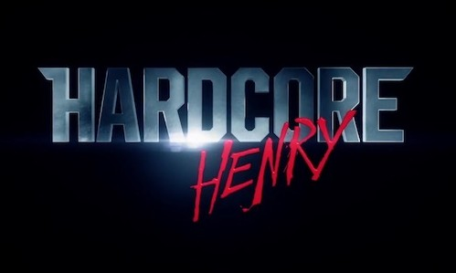
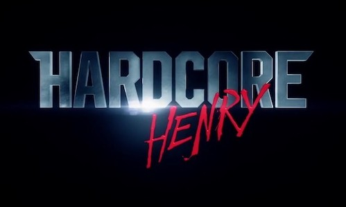

Pook's Pick

Hit or Shit
Hardcore Henry
 

By now, everyone knows what Hardcore Henry is. It’s an all first-person action movie, or as almost everyone who has seen a trailer named it, Call of Duty: The Movie.
Maybe it was because I walked in with lower standards than a balding manlet on titty Tuesdays at the local budget strip club, or maybe it was because Hardcore Henry was actually decent, but I found myself somewhat enjoying the movie (only somewhat, though, sadly).
Let’s get going with the plot. There isn’t much, so this will be short: Henry has died, his hot science girlfriend has brought him back, and now, it’s time to fight the telepathic final boss. That’s it. That really is it. I mean, I know it’s a first-person action movie, but c’mon guys.
So now that we’ve got the mundane out of the way, let’s cover the unusual part: the first person point of view. Now, let me stop you rabid overweight neckbeards “MUH DOOM” “MUH 40’s MOBIES.” Yeah, we know. A first-person view isn’t original, but it has never been done on this scale before, and I’m here to say, it works. It shouldn’t, but it does.
The action scenes are inventive and filmed very well. They are intense and all-around great. The only problem? There are simply too many of them. The movie has a lot of cool ideas, characters, and little moments it could have expanded on, but instead of a subtle, quiet moment, we get “1 vs. 100” clones. THRILLING.
Everything is just fine here. The acting is passable (except for Copley, who is just having a fucking blast). The music is actually really great. The editing and everything works. It just needed a rewrite and maybe trimmed a little.
As it stands, Hardcore Henry is a reluctant “shit,” a triumph in its own right. It tragically is held down by the same thing that elevates it: its gimmick.
The movie is nowhere close to bad and is sadly just so close to good. Hopefully, now that the concept is proven to work, we can get a real movie and not just a test reel.